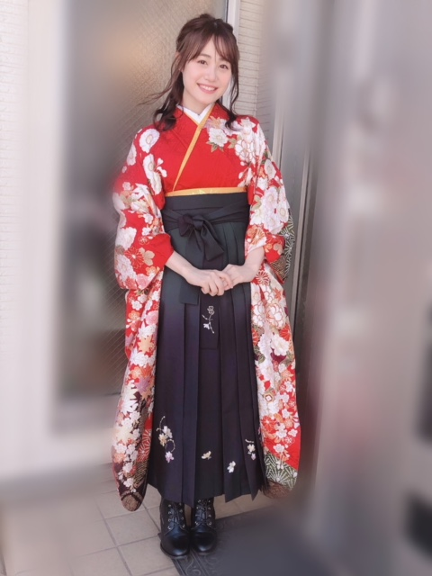

本文译自: https://ameblo.jp/itou-miku/entry-12449796085.html
Twitter: https://twitter.com/InfoItomiku/status/1110481683147444224
Credits:
Tweet
ブログを更新しました :大学卒業。
大学を卒業しました！是非読んで下さい。(みく)
Blog
今月、4 年間通った大学を無事に卒業いたしました！！
这个月，我从就读四年的大学顺利毕业啦！！
デビューが高校生だった私は、学業と仕事の両立というのはずっと当たり前のことで。
对于高中时出道的我来说，学业与工作共存一直是理所当然的事情。
そんな学業との両立が終わってしまう事が、今では寂しく思います。正直、大学の卒業を諦めそうになった事もあるし、辞めて仕事に集中しようと思った事も何度もありました。
一想到这样兼顾学业的日子终究还是结束了，就感觉有些寂寞呢。说实话，放弃大学毕业，放弃学业专注事业这种事情我也想过很多次。
でも受験を決意した日から「絶対に合格して卒業する！」って決めてたし、自分の力を信じてみたくて入学したので諦めずにここまで来れました。
但是从决定参加考试那天起我就决定：绝对要合格毕业！毕竟是因为相信自己的能力所以入学了，所以一直没有放弃，坚持到了现在。
そして
それは自分だけでは絶対に達成できなくて
但是，那是我一个人绝对无法达成的事情。
いつも相談に乗って下さった教授や
大学生らしく笑ったり支えてくれた友達
沢山困らせたけどそれでも大学に行かせて下さった事務所の皆さま
心身共にずっとケアしてくれた両親
一直与我相谈的教授
像大学生一样（？）笑着支持着我的朋友
虽然一直让事务所那边很困扰，但是还是让我继续坚持把大学读下去的事务所的大家
还有在身心上照顾着我的双亲
多くの方々に支えられ、励まされたから卒業できたんだと思います。感謝してもしきれません。ありがとうございました。
我想，正是因为有这么多人的支持与鼓励，我才能顺利毕业。感激不尽，谢谢你们。
ファンの皆さんからも、学業を応援してくれるお手紙やコメントをこの 4 年間でたくさん頂きました。
粉丝们也是，这四年来也收到了很多应援学业的来信和评论。
心から励みになってました。
ありがとう^ ^
大家的应援一直激励着我的内心。感谢各位^ ^
いろんな事があったけど、大学に行けて本当に良かったと思っています。
虽然发生了各种各样的事情，但是上了大学真是太好了。
レポートを泣きながら書いたり、発表がうまくいかなくて落ち込んだりしたのが昨日のことのようです(笑)
哭着写 report，因发表不顺利而沮丧，这样的事情仿佛还是昨天发生的一样（笑）
普通の大学生のように遊ぶこと、行事に参加することはできなかったけど
虽然不能像普通的大学生一样去玩，去参加活动。
この 4 年間は人生の宝物です。
但这四年是我人生中的宝物。
役者として、この 4 年間で感じたことや学んだことをしっかりと胸に刻みこれからも精進していきます。
作为声优，我也会牢记这四年间的所学所感，并将继续努力下去。
あと念願の袴も着る事ができました^ ^
一直想穿的和服[1]也如愿以偿地穿到了^ ^

そして 4 年間ずーーっと
一緒にいてくれた友達と ♡
还有四年来一直陪伴在我身边的朋友 ♡
この子が居なければ私は卒業できてないと言っても過言ではない(笑)きっと一生の友達です。
说没有她在的话我就不能顺利毕业一点也不为过（笑），一定会是一生的朋友。
また四月から
立派な社会人として頑張ります。
又到四月，我会为做一个优秀的社会人而努力的！
これからも伊藤美来を
どうぞよろしくお願いします！
从今以后也请请多指教！
みっく o(^_-)O